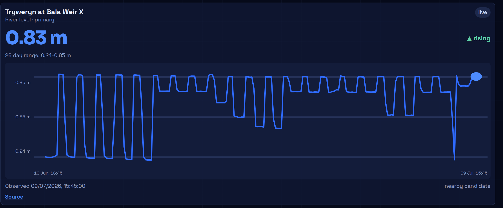
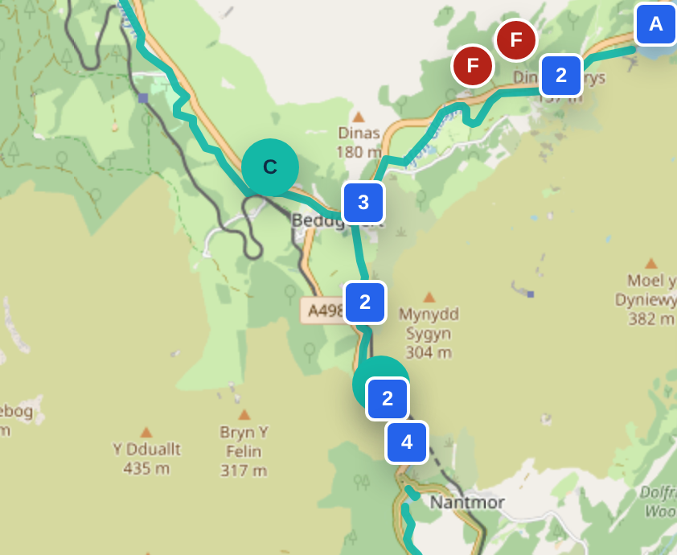
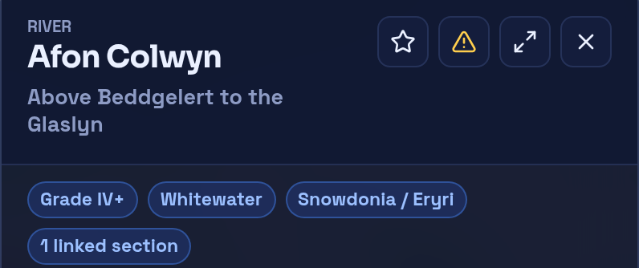
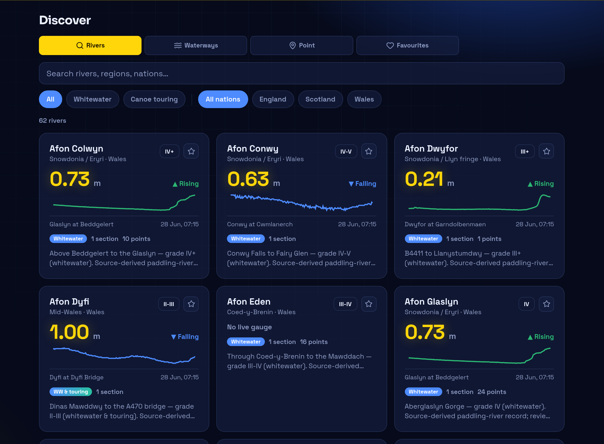
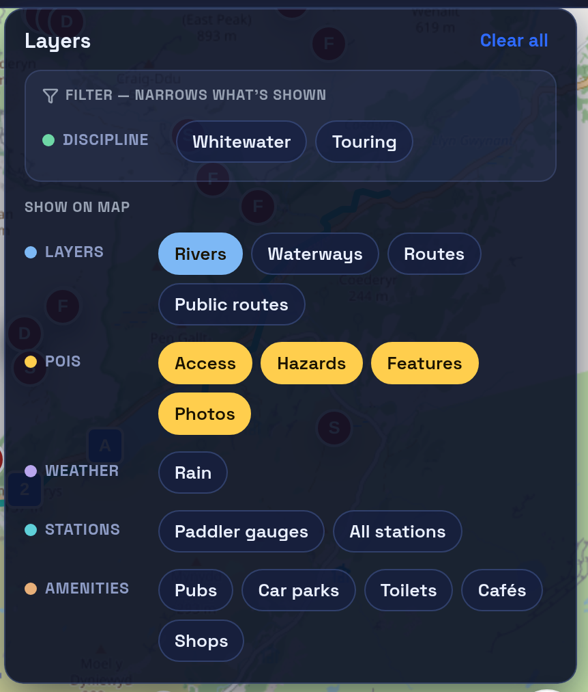

Check the level
The latest reading, its trend, and up to 28 days of history — stamped with the observation time and linked to the official source.
UK-first canoe planning
Real, community-kept knowledge for the rivers you paddle — access points, hazards, photos, recent reports, and live levels, all in one place.
Free while in early access. Works in the browser — installable on your phone.
How it works
Three questions decide every trip. RiverLaunch answers them on one screen.

The latest reading, its trend, and up to 28 days of history — stamped with the observation time and linked to the official source.

Rivers drawn end to end on OS mapping, with access points, parking, portages and features pinned exactly where they are.

Hazards and reports carry a date, a place and a severity — and other paddlers can confirm or dispute them, so stale information shows its age.
Discover
Live readings, trend sparklines, grades and section counts for the whole catalogue — filter by whitewater or touring, England, Scotland or Wales.

The map

Community data, kept honest
You will never see "safe", "approved" or "good to go" in RiverLaunch. You'll see today's level, recent reports, known hazards, and when each was last confirmed — with its source. Reading the water is your call. Our job is to make sure you're reading today's information, not last year's.
Groups
Clubs, trip crews and regular paddling friends get their own space to plan the day.
Pick the river, set the date and meeting point, and share parking and shuttle plans where everyone can find them.
Going, maybe, or out — RSVPs with availability notes, and on-the-day check-in and check-out so it's clear who's on the water.
Share your emergency contact with the session leader for that day only. It closes automatically when the session ends.
Get involved
RiverLaunch is in early access and being shaped with paddlers and clubs — getting access notes, hazards and level context right, river by river. If you'd like to help, or you want your local river covered next, we'd love to hear from you.